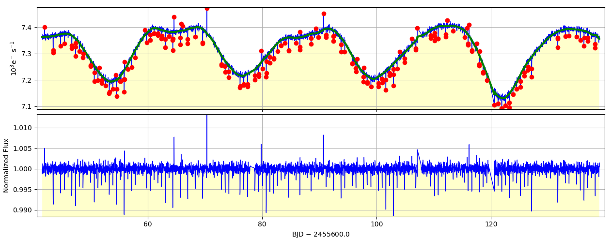

kepflatten: remove low frequency variability from time-series, preserve transits and flares¶
-
pyke.kepflatten.kepflatten(infile, outfile=None, datacol='PDCSAP_FLUX', errcol='PDCSAP_FLUX_ERR', nsig=3.0, stepsize=0.5, winsize=5.0, npoly=3, niter=1, ranges='0, 0', plot=False, overwrite=False, verbose=False, logfile='kepflatten.log')[source]¶ kepflatten – Remove low frequency variability from time-series, preserve transits and flares
kepflatten detrends data for low-frequency photometric structure by dividing by the mean of best-fit sliding polynomials over a sequential series of small time ranges across the data. For example, a typical timestamp is fit three times of
stepsize=1.0andwinsize=3.0. The adopted fit to the timestamp will be the mean of the three values. Outliers are iteratively-clipped from the fit, therefore structure in e.g. short-lived transits or flares are better preserved compared to e.g. bandpass filtering methods (kepfilter). Optionally, input data, best fits, fit outliers and output data are rendered to a plot window. In many respects kepflatten performs the opposite task to kepoutlier which removes statistical outliers while preserving low-frequency structure in light curves.Parameters: infile : str
The name of a MAST standard format FITS file containing a Kepler light curve within the first data extension.
outfile : str
The name of the output FITS file. outfile will be a direct copy of infile but with NaN timestamps removed and two new columns in the 1st extension - DETSAP_FLUX (a flattened or detrended for low-frequency variations version of the data) and DETSAP_FLUX_ERR (the associated 1-\(\sigma\) error).
datacol : str
The column name containing data stored within extension 1 of infile. Typically this name is SAP_FLUX (Simple Aperture Photometry fluxes), PDCSAP_FLUX (Pre-search Data Conditioning fluxes) or CBVSAP_FLUX (SAP_FLUX corrected for systematic artifacts by the PyKE tool kepcotrend).
errcol : str
The column name containing photometric 1-\(\sigma\) errors stored within extension 1 of infile. Typically this name is SAP_FLUX_ERR (Simple Aperture Photometry fluxes), PDCSAP_FLUX_ERR (Pre-search Data Conditioning fluxes). The error column coupled to CBVSAP_FLUX data is SAP_FLUX_ERR. kepflatten normalizes datacol and errcol consistently using a series of best fit polynomials.
nsig : float
The sigma clipping threshold in units of standard deviation. Data deviating from a best fit function by more than the threshold will ignored during subsequent fit iterations.
stepsize : float
The data within datacol is unlikely to be well represented by a single polynomial function. stepsize splits the data up into a series of time blocks, each is fit independently by a separate function. The user can provide an informed choice of stepsize after inspecting the data with the kepdraw tool. Units are days.
winsize : float
The size of the window to be fit during each step. Units are days. winsize must be greater or equal to stepsize. winsize >> stepsize is recommended.
npoly : integer
The order of each piecemeal polynomial function.
niter : integer
If outliers outside of nsig are found in a particular data section, that data will be removed temporarily and the time series fit again. This will be iterated niter times before freezing upon the best current fit.
ranges : str
The user can choose specific time ranges of data on which to work. This could, for example, avoid removing known stellar flares from a dataset. Time ranges are supplied as comma-separated pairs of Barycentric Julian Dates (BJDs). Multiple ranges are separated by a semi-colon. An example containing two time ranges is:
2455012.48517,2455014.50072;2455022.63487,2455025.08231.If the user wants to correct the entire time series then providing
ranges='0,0'will tell the task to operate on the whole time series.plot : bool
Plot the data, fit, outliers and result?
overwrite : bool
Overwrite the output file?
verbose : bool
Print informative messages and warnings to the shell and logfile?
logfile : str
Name of the logfile containing error and warning messages.
Examples
$ kepflatten kplr012557548-2011177032512_llc.fits --nsig 3 --stepsize 1.0 --winsize 3.0 --npoly 3 --niter 10 --plot --overwrite --verbose